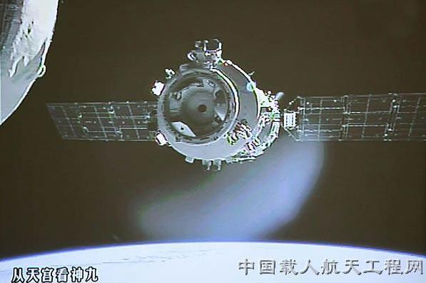

神舟九号于2012年6月16日18时37分在酒泉卫星发射中心由新型长征二号F遥九火箭发射。神九任务圆满成功标志着载人航天工程第二步任务取得了重大成果，为今后的载人航天的发展、空间站的建设奠定了良好的基础。
神舟九号飞船与神舟八号飞船技术状态基本一致，为进一步提高安全性与可靠性，进行了部分技术状态更改。飞船全长9米，舱段最大直径2.8米，起飞质量不大于8130千克。神舟九号飞船返回舱主着陆场位于内蒙古中部地区草原。
飞行乘组由3名航天员组成，其中1名为女航天员，分别是景海鹏、刘旺、刘洋;飞船在轨飞行10余天，飞船与天宫一号进行了两次交会对接，第一次为自动交会对接，第二次由航天员手动控制完成。
